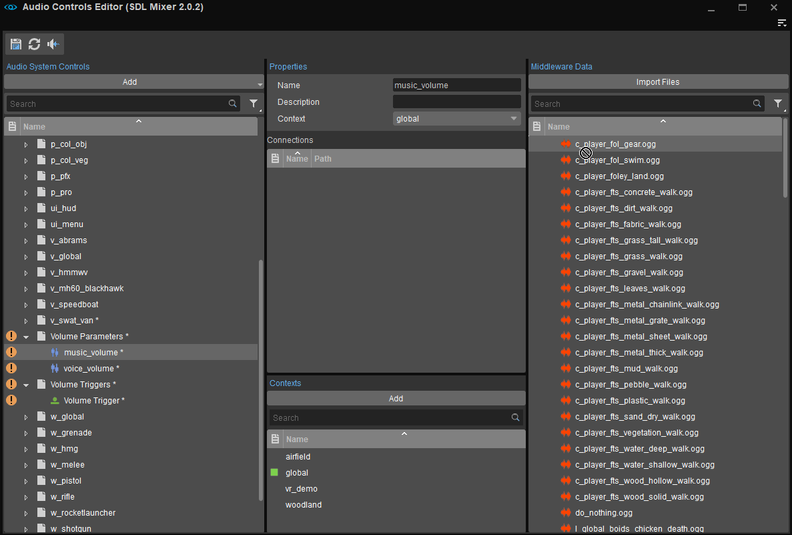
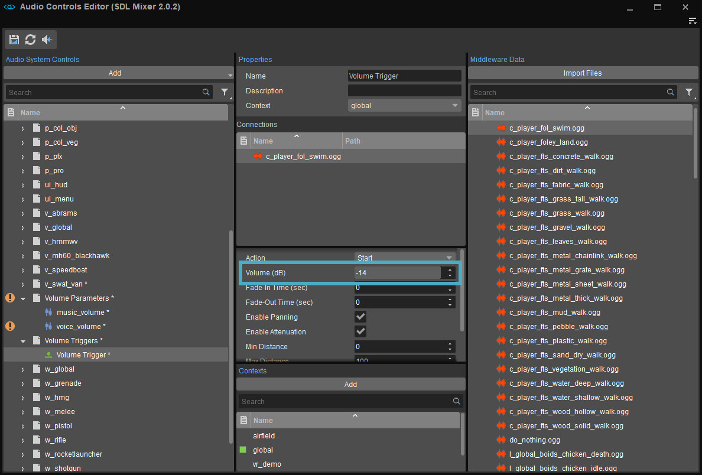

In SDL_mixer users can manipulate a file's volume by connecting it to a parameter:

Connecting a file to a parameter
Tweaking that parameter between 0 and 1 will effectively change the volume between -96dB (complete silence) and the maximum volume that has been set in the Properties of the Connection between that file and the connected Trigger:

The max volume when Parameter is set to 1